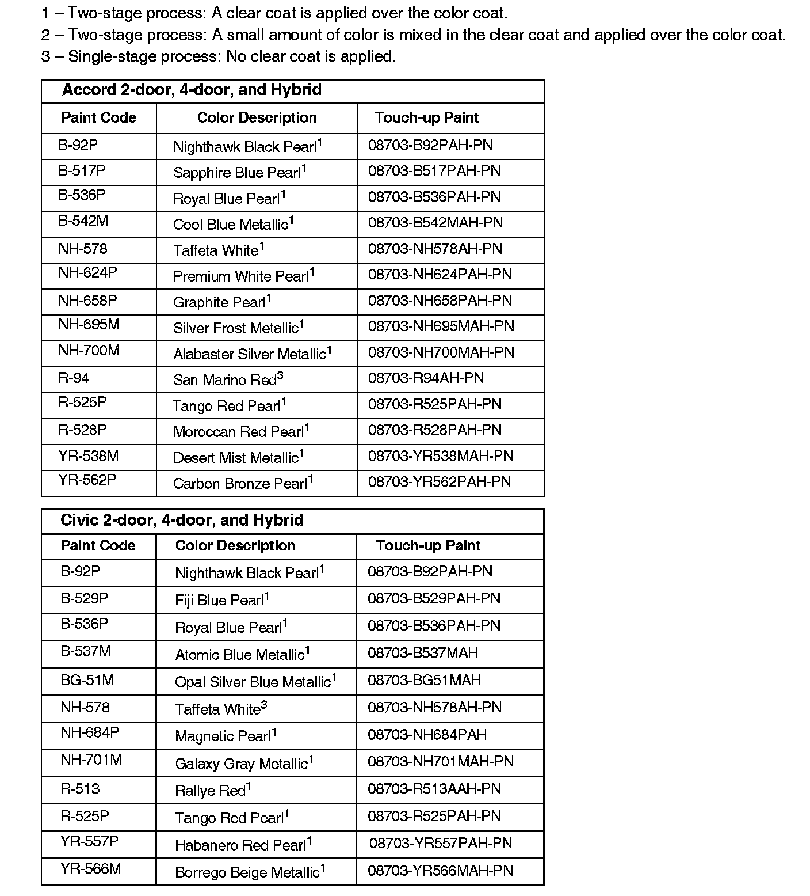
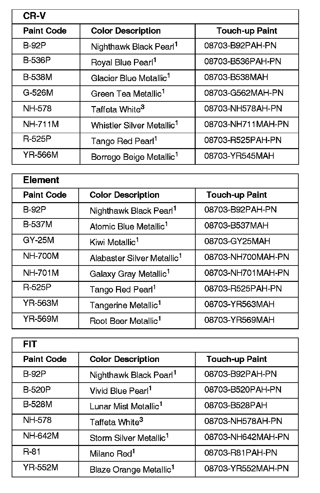
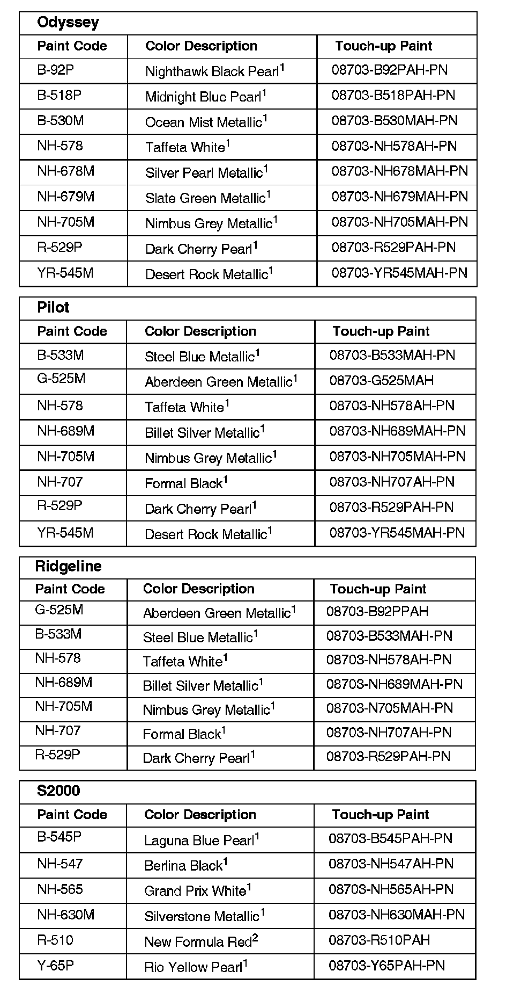
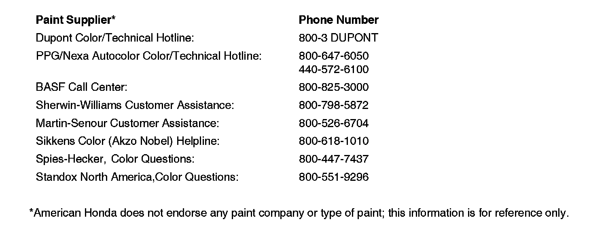
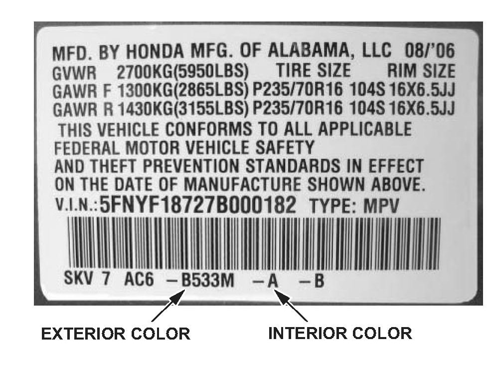
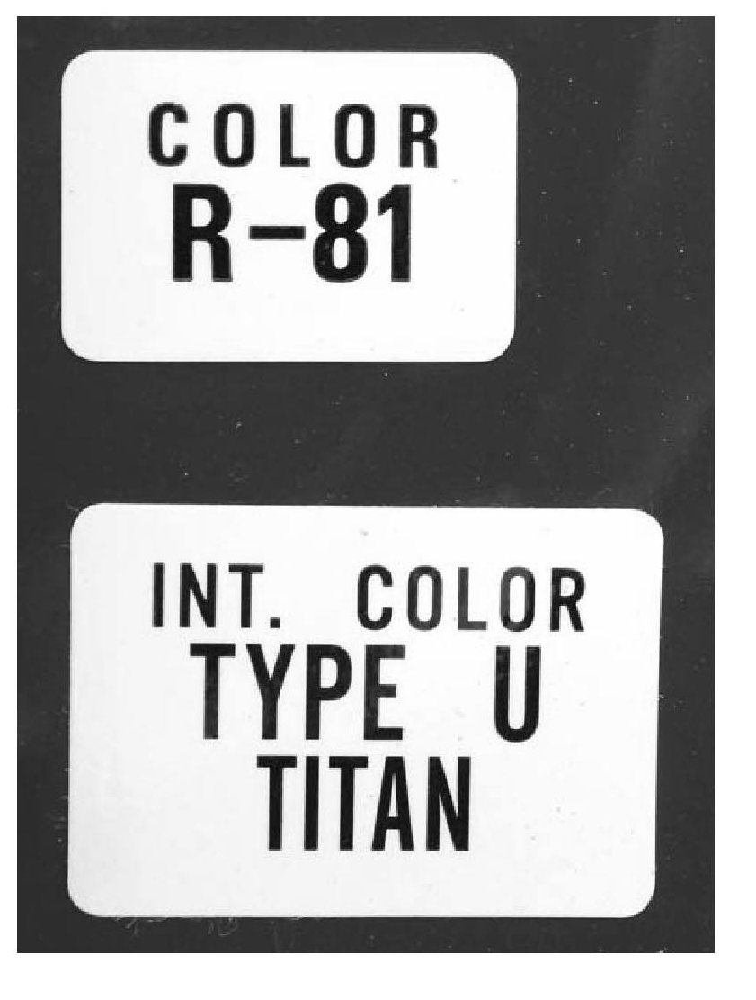

Paint - 2007 Paint Codes
06-089December 8, 2006
Applies To:
2007 Models - ALL
2007 Honda Paint Codes, Exterior and Interior Color Code Locations
Paint formulations are determined by each paint company. For questions about formulas or color matching, call your paint supplier or one of the companies listed at the end of this service bulletin.




The number following the paint description designates the paint process used during the vehicle manufacture:
EXTERIOR AND INTERIOR COLOR CODE LOCATIONS
All color information is on the inside of the driver's doorjamb (B-pillar).

Some models use this type of label with the exterior and interior color codes the bar code:

Other models use these types of exterior and interior color code labels:

Disclaimer